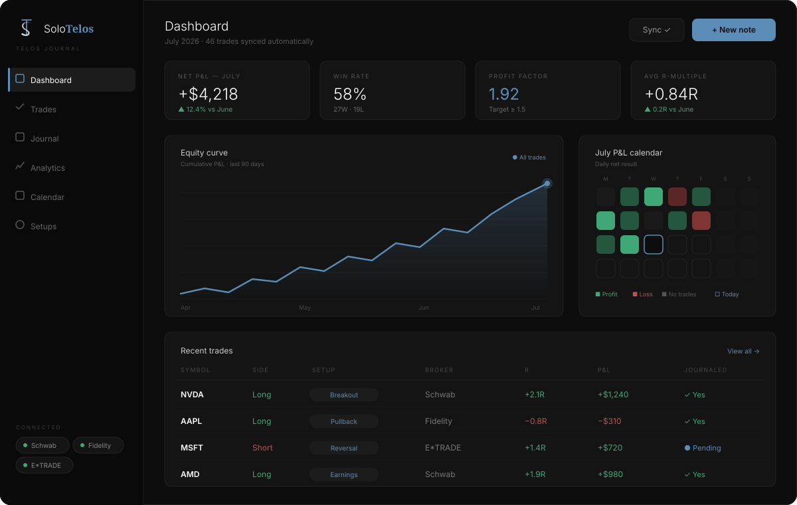
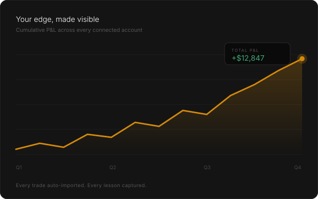
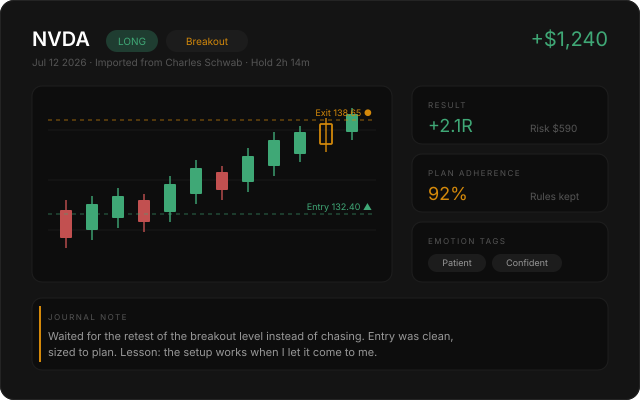
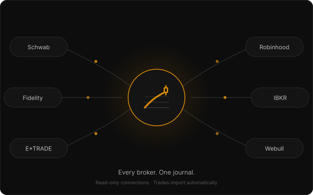

Connect your brokerage accounts and every trade imports automatically — entries, exits, size, and P&L. You add the part only you can: the reasoning. Telos Journal turns your trading history into your trading education.

Read-only broker connections sync every fill — entries, exits, partials, fees. Your journal is always complete and always current.
Win rate, profit factor, expectancy, average R — sliced by setup, symbol, time of day, and hold time. Find the edge; cut the leak.
Tag every trade with your playbook — breakout, pullback, reversal, earnings. Then see which setups actually pay you.
Attach chart screenshots, write the thesis, and tag the emotion. The context you'll wish you had six months from now.
Your month at a glance. Spot overtrading streaks, revenge-trade days, and the sessions where you're sharpest.
A guided end-of-week review: unjournaled trades, rule breaks, and one lesson to carry forward. Discipline, systematized.
Secure, read-only connections to the major U.S. brokerages. We can see your trade history — we can never touch your money or place orders.
Link your brokerage accounts in about two minutes. Historical trades import instantly; new fills sync automatically from then on.
Each trade arrives ready for your input. Tag the setup, note the reasoning, mark the emotion — thirty seconds while it's fresh.
Your analytics compound with every trade. Setups that pay get bigger; leaks get plugged. The journal becomes your edge.
Your equity curve across every connected account, with the metrics that matter layered on top.


Each trade gets a page: the chart, the numbers, and your thinking — side by side.
Most investors hold more than one account. Telos Journal treats them as one trading record — because that's how your performance actually works.

Telos Journal opens to the waitlist first. Early members get free access during the beta — and a hand in shaping the product.